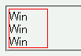
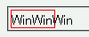

display:none; が指定された要素とソース中の改行コードとの間にタグ以外に文字が存在しないとき、改行コードを空白として表示しない。
<div style="width:3em; border:1px solid red;"> <span>Win<span style="display:none;">dows95</span></span> <span>Win<span style="display:none;">dows98</span></span> <span>Win<span style="display:none;">dowsMe</span></span> </div>
ソース中の改行コードが空白に置き換えられていれば、親ボックスをはみ出さないために折り返しが行われるはずです。
Moz1.0での表示
Opera6.05での表示
Opera6.05では不具合の発生が確認されました。Opera7.0では標準・互換モードともに不具合の発生は確認されませんでした。